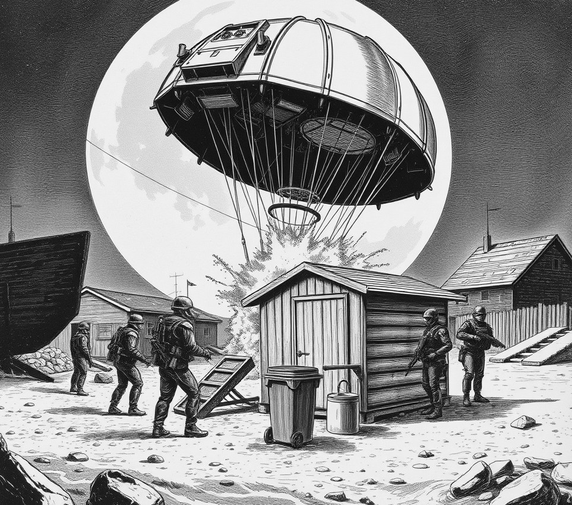

Mare Imbrium Basin, Luna . 25 January 2356

I am standing on the tactical bridge of the dreadnought Vengeance as three fleet admirals prepare to raze a four-by-three-metre garden shed. The objective below, magnified thirty thousand times on the primary Holo-Display, is a single teal Tupperware lid stolen from the officers' mess last month.
Four marine divisions are currently descending into the low-gravity dust of the crater district. Orbital batteries hum as targeted plasma fire burns away a hedge of decorative cacti, clearing a drop zone for eighty thousand heavily armed troops. High Admiral Sunita Patel adjusts her white gloves, watching a tactical readout of a padlocked shed door and a rusted wheelbarrow.
The sheer scale of the assault seems absurd until Patel explains the crisis in the flagship galley.
"If we do not recover the seal for the 1.2-litre marinating tub, the leftover curry dries out in the communal fridge," Patel tells me, her voice completely flat. "When the curry dries out, Admiral Chen accuses Admiral O'Hanlon of sabotage. We lost three battlecruisers in the asteroid belt last week because nobody would pass the salt."
This is not a counter-terrorism operation; it is naval domestic therapy conducted with orbital artillery. Down on the lunar floor, drop-pods smash into the potting soil. A squad of shock troops uses a thermite lance on the shed door while gunships circle a plastic compost bin.
The shed door collapses in a cloud of rust and peat moss. Over the fleet frequency, Commander Turei Broughton reports that the target has been secured, though preliminary scanning reveals a tragic error.
"Bridge, this is Strike Team One," Broughton's voice crackles over the speakers. "The lid is red. Repeat, the lid is red. It belongs to a Pyrex dish."
Patel does not flinch. She simply turns to the navigation officer and orders a full orbital bombardment of the neighbouring gazebo.